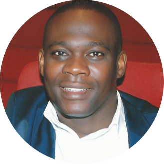

|  | Laurindo AntónioFounder & CTO of the Llama Tecnologias. Sou um profissional com elevado sentido de responsabilidade, elevada capacidade de aprendizagem, disciplinado e rigoroso, e 💚 trabalhar em equipa e aceitar novos desafios. |
MESTRADO • 2018 - 2020 • ÉCOLE DES TECHNOLOGIES NUMÉRIQUES APPLIQUÉES – ETNA
ETNA, França, Mestre em Arquitectura de Sistemas, Redes e Segurança, na especialidade de Engenharia de Segurança Cibernética
PÓS GRADUAÇÃO • 2019 •UNIVERSIDADE PRIVADA DE ANGOLA – UPRA
Na epecialidade de agregação pedagógica para o Ensino Superior
PÓS GRADUAÇÃO • 2007 •ESCOLA SUPERIOR DE REDES – ESR RNP
Universidade de Brasília, em Redes de Computadores
LICENCIATURA •2003 - 2008 •UPRA
Universidade Privada de Angola, em Engenharia Informática na especialidade de Sistemas
BACHAREL •2000 - 2003 •UAN
Universidade Agostinho Neto, em Engenharia Química
ENSINO MÉDIO•1996 - 2000 •IMIL
Instituto Médio Industrial de Luanda, no curso de Química
ENSINO SECUNDÁRIO•1992 - 1996•NGOLA KANINI/KILUANJE
ENSINO PRIMÁRIO•1988 - 1992•ESCOLA EX - 147
| Dates | Work |
|---|---|
| 2018 -> | DIRECTOR DO DEI • UPRA • |
| 2014 -> 2017 | DIRECTOR DO GTI • MINAMB • |
| 2006 -> 2014 | COORDENADOR • MINDEN/CSS/FAA• |
| Segurança Cybernética | ⭐⭐⭐⭐ |
| Redes de Computadores | ⭐⭐⭐⭐ |
| Sistemas | ⭐⭐⭐⭐ |